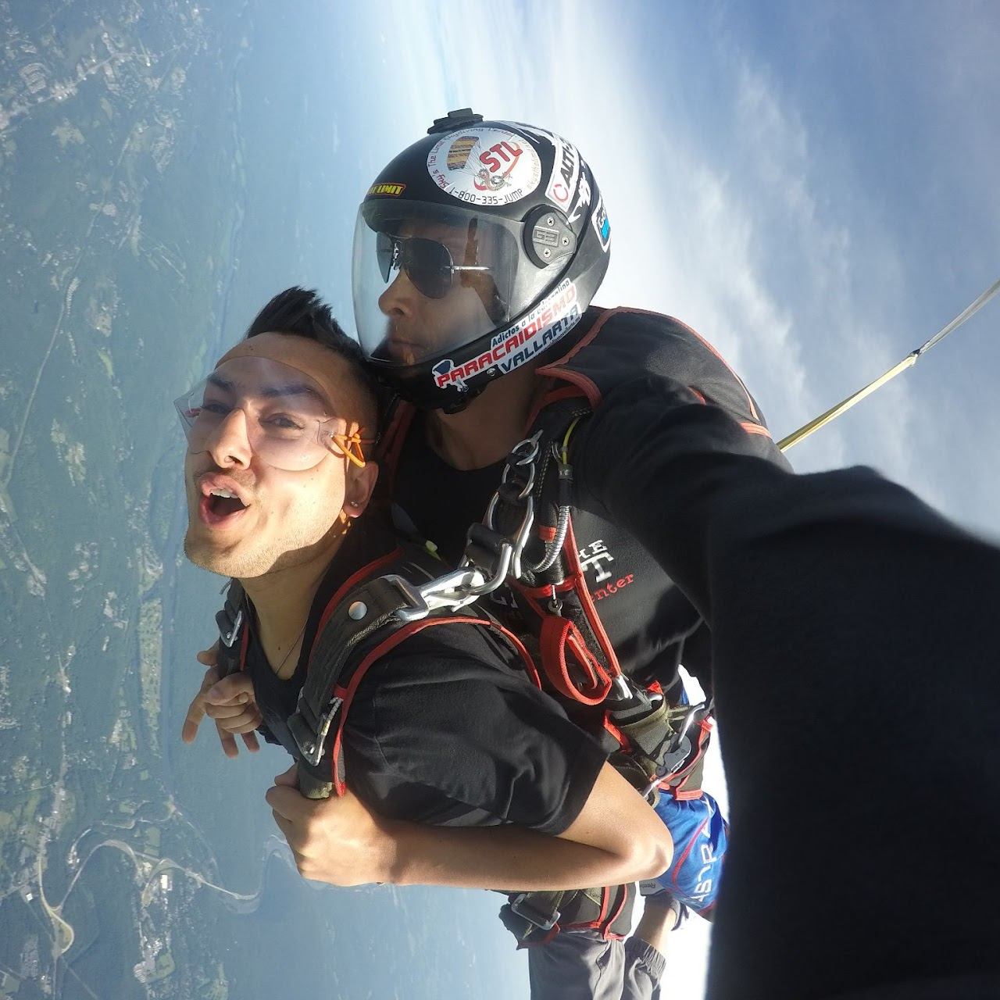
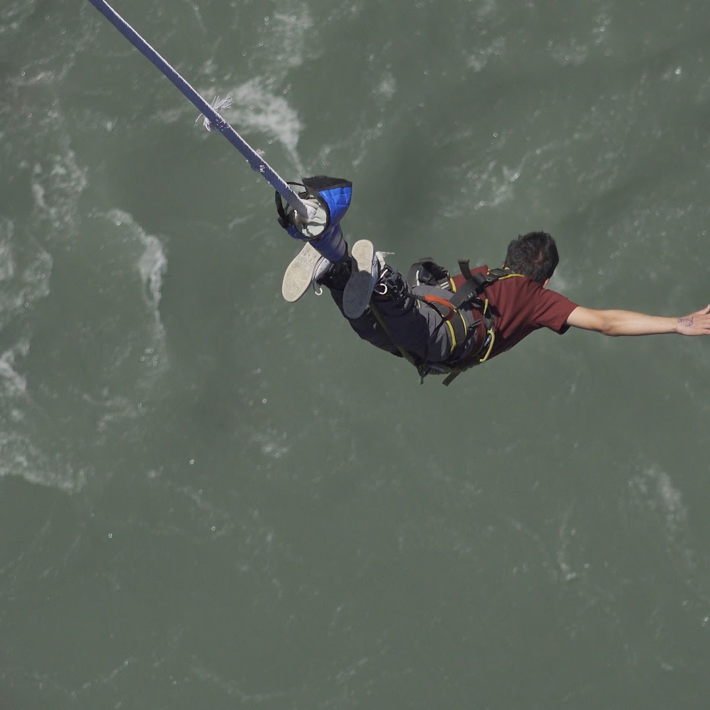
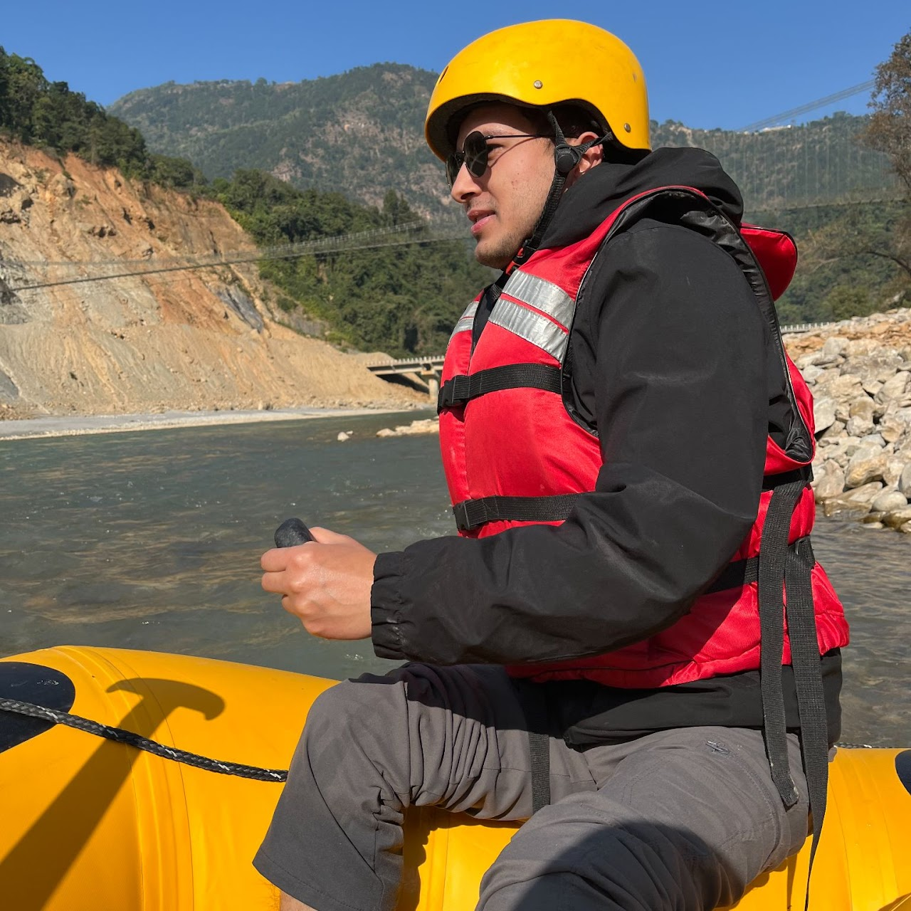

About Me
Applied Economist and Researcher
I am an applied economist and Postdoctoral Researcher in the Department of Agricultural and Applied Economics at Texas Tech University. My research focuses on environmental and resource economics, production economics, risk and uncertainty, structural modeling, and applied econometrics.
Across academic, policy, consulting, and industry settings, I am interested in using rigorous economic analysis to make trade-offs clearer: how productivity, environmental quality, resilience, and incentives interact when people and organizations make decisions under uncertainty.
A Few Snapshots of My Adventures
Outside research, I enjoy experiences that keep life energetic and memorable. From skydiving in Pennsylvania to bungee jumping and rafting in Nepal, these adventures remind me to stay curious, open, and willing to try difficult things.

Skydiving in Pocono, Pennsylvania (2019)

Bungee jumping in Kushma, Nepal (2021)

Rafting in Kali Gandaki River, Nepal (2021)
My Journey from Nepal to the USA
I was born and raised in Nepal and came to the United States for higher education. That journey shaped both my personal life and my professional interests: I learned how institutions, opportunity, community, and resilience matter in very practical ways.
The Decision to Move
I came to the United States motivated by the promise of strong graduate training and new research opportunities. Leaving family behind was difficult, but the excitement of learning in a new environment helped carry me through the transition.
Settling In
Landing in New York with family waiting for me made the first step easier. Later, I moved to Georgia for my master's program, where the UGA Nepali community and my advisor's support helped me settle quickly. I adapted to a new academic culture, new routines, and the occasional surprise of finding fewer vegetarian options than expected.
Life in the USA
Over the years, the generosity and respect I have received have made my life here meaningful. I still miss the momo and mountains of Nepal, but I am grateful for the communities, mentors, and collaborators who have shaped my path.
Advice for Others
To anyone from Nepal considering a similar journey: stay open, work hard, and show respect to the people around you. It comes back in ways that make the journey worthwhile.